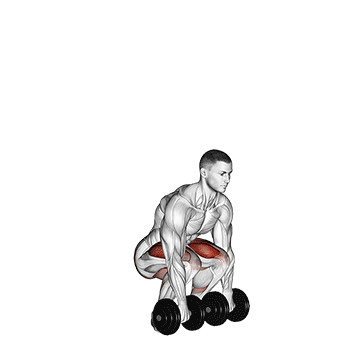
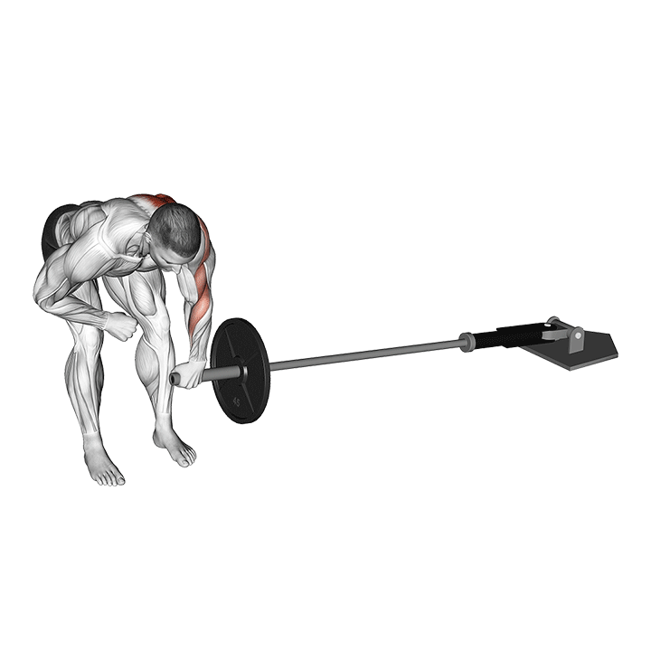
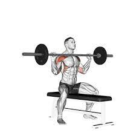

Intermediate Level Workouts
Here are some intermediate-level workouts to challenge yourself:
Strength Training
- Deadlifts - 4 sets of 8 reps
- Bench Press - 4 sets of 8 reps
- Pull-ups - 4 sets of max reps
- Barbell Rows - 4 sets of 10 reps
- Overhead Press - 4 sets of 8 reps
The deadlift exercise is a relatively simple exercise to perform, a weight is lifted from a resting position on the floor to an upright position. The deadlift exercise utilizes multiple muscle groups to perform but has been used to strength the hips, thighs, and back musculature.
Bench presses can be an effective exercise for building up chest, arm, and shoulder muscles. They work several different muscles in your upper body, including the chest, shoulders, and arms. Depending on your goals, there are different variations of bench presses that work slightly different muscles, too. For example, a narrower grip bench press will put extra emphasis on the triceps and forearms.

A pull-up is an upper-body strength exercise. The pull-up is a closed-chain movement where the body is suspended by the hands, gripping a bar or other implement at a distance typically wider than shoulder-width, and pulled up. A pull-up may be performed with overhand (pronated), underhand (supinated)—sometimes referred to as a chin-up—neutral, or rotating hand position.

Barbell Rows are a full body, compound exercise. They work your upper-back, lower back, hips and arms. They build a stronger, muscular back and bigger biceps. Barbell Rows are one of the most effective assistance exercises you can do to increase your Squat, Bench Press and Deadlift.
The overhead press is revered for its brute-strength production and renowned for its seeming simplicity. Just press a barbell, or one of its cousin 'bells, from the top of your chest to its overhead, arms-extended destination. That's the lift in a nutshell, and the juiciest fruits of your overhead labor are unmatched shoulder and upper-back development.
HIIT (High-Intensity Interval Training)
| Exercise | Sets |
|---|---|
| Mountain Climbers | 4 sets of 20 seconds |
| Burpees | 4 sets of 10 reps |
| Jump Squats | 4 sets of 15 reps |
| Plank with Shoulder Taps | 4 sets of 30 seconds |